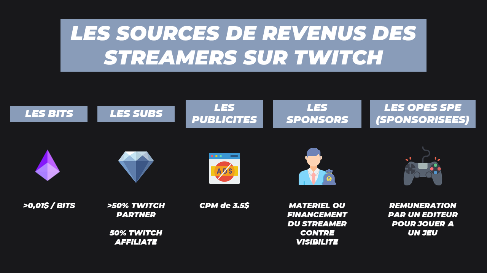

Twitch est une plateforme de streaming avec possibilité d’interagir avec les personnes qui créent des contenus, les streamers (ils diffusent des contenus en direct appelés streams.) Les télespectateurs sont, eux, appelés viewers .
La volonté de Twitch est de placer le spectateur au centre et d’établir un lien d’authenticité et de spontanéité entre ceux qui utilisent la plateforme.
Public jeune (70 % de l’audience a entre 18 et 34 ans).
L’audience est majoritairement masculine (à 65 %).
Le succès de la plateforme réside aussi dans son fort lien communautaire. Twitch s’est diversifié au fil des ans et déroule désormais une large palette de programmes thématiques, allant des jeux vidéo à la politique, en passant par l’actualité, la musique, la cuisine ou le sport, au point de constituer aujourd’hui une alternative aux médias traditionnels pour les personnes suivant des centres d’intérêts très spécifiques.
Le site est interdit au moins de 13 ans car il ne dispose pas de filtres comme sur Youtube Kids.
Le plus grand gamer est « Ninja », un Américain qui joue principalement à Fortnite et League of Legends.
Les revenus des streamers sont comptabilisés en fonction des publicités, des abonnements, des sponsorisations, des ventes et des dons.
